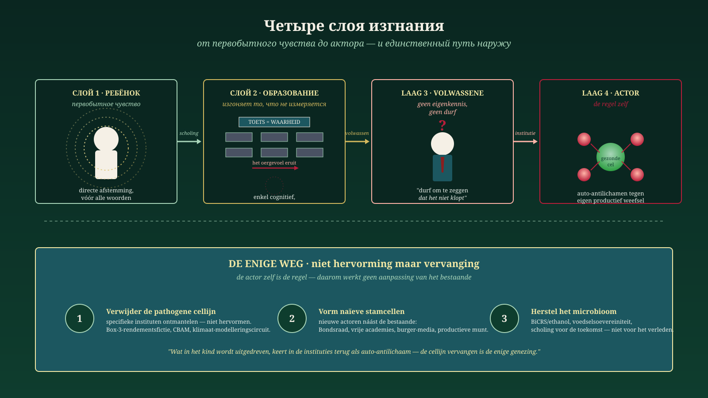

Актор есть правило
Почему реформа невозможна, а замена неизбежна — и как медицина аутоиммунной болезни показывает, как по-настоящему исцелить нидерландский государственный строй.
Jacobus van Merksteijn · Мальта, июнь 2026
В трёх предыдущих частях мы выстроили цепь рассуждений, начинающуюся с новорождённого ребёнка и заканчивающуюся больным государственным строем. В этой четвёртой части рассуждение доводится до своего крайнего вывода. Из него выходит уже не диагноз и не призыв к лучшей политике. Из него выходит революционный вопрос: какие акторы существуют к 2030 году, а какие будут к тому времени заменены?
Три предыдущих слоя — кратко
Слой 1 — В Пространстве для первобытного чувства мы установили, что в человеке присутствует нечто ещё до того, как он может говорить: прямая, телесная настройка между людьми. Никакой мистики — нейрофизиологический факт, подтверждённый Поргесом и МакГилкристом. Но это первобытное чувство бессознательно вытесняется системой воспитания и образования, полностью ориентированной на измеримое, языковое и когнитивное. То, что не вписывается в тест, делается невидимым. То, что становится невидимым, вымирает. Это первое изгнание — не людей, а способности в людях.
Слой 2 — В Линии снабжения мы проследили, что происходит с этим изгнанным человеком во взрослой жизни. «Смелости сказать, что это неправильно, не хватает из-за недостатка самопознания — это структурная ошибка, а не черта характера.» Наши институты, процедуры, принятие решений и наше образование построены на эволюционном действии и мышлении: маленькие шаги, консенсус, осторожность. Кто движется внутри этого — принимается. Кто движется вне этого — по определению чужероден системе. Образование сегодня готовит ко вчерашнему дню. Тому, что нужно будущему, мы не учимся.
Слой 3 — В Иммунной системе, атакующей здоровые клетки мы описали следствие на системном уровне. Здоровый организм распознаёт захватчиков и нейтрализует их. Больной организм атакует собственные здоровые клетки. Именно так работают Нидерланды сейчас: фермер, МСП, директор-собственник, мастеровой, изобретатель, бунтарь со знанием — все это здоровые клетки, атакуемые аутоантителами. Не из злого умысла. Из самосохранения больной системы.
Слой 4 — сам актор
И теперь — шаг, превращающий три предыдущих слоя в революционный вывод: больны не структуры, больны акторы. Министерство климата — не нейтральный аппарат, проводящий неправильную политику. Это совокупность людей, которые посредством образования, отбора и культуры настолько сформированы, что больше не знают первобытного чувства, не осмелились развить самопознание и потому автоматически действуют как аутоантитело против любого отклоняющегося знания. ЦПБ не случайно слеп к BiCRS — ЦПБ является организацией, способной считать лишь то, что вписывается в старую модель. ФНВ производит не случайно антипроизводительную политику — ФНВ есть застывшее выражение мировоззрения, видящего производительность как угрозу.
Ошибка не в том, что наши институты действуют неправильно.
Ошибка в том, что наши институты суть то, что они есть.Реформа невозможна, потому что реформатор и реформируемый объект — одно и то же. Единственный путь — замена, и она начинается с признания того, что нынешние акторы никогда сами не вынесут суждения о своём праве на существование.
Это не риторика. Это именно то, чему нас пришлось научиться в медицине при лечении аутоиммунных болезней. Поколения врачей пытались «перевоспитать», «скорректировать», «успокоить иммуносупрессией» больную иммунную систему. После пятидесяти лет стало ясно: аутоиммунная B-клеточная линия — не здоровая клетка с неправильной настройкой. Это клеточная линия, идентичность которой сама по себе аутоиммунна. Её нельзя перевоспитать. Её необходимо устранить. После этого из наивных стволовых клеток — никогда не имевших неправильного программирования — могут возникнуть новые B-клетки.
Именно это делает CAR-T-клеточная терапия при волчанке, рассеянном склерозе и склеродермии. И именно это нужно политически Нидерландам.
Пять медицинских методов лечения, пять политических эквивалентов
Медицина аутоиммунной болезни знает пять нарастающих путей лечения. У каждого есть прямое политическое зеркало. Кто смотрит на них рядом, сразу видит, где находятся нидерландские партии и чиновники — и каков необходимый конечный результат.

Пять нарастающих путей лечения — от симптоматического (путь 1) до восстановления микробиома (путь 5). Выигрышная комбинация: путь 2 + 4 + 5.
Путь 1 · Широкая иммуносупрессия ↔ субсидии и пакеты покупательной способности
Врач назначает преднизон. Иммунная система подавляется целиком — здоровая и больная вместе. Симптомы временно отступают, но болезнь продолжается, и пациент становится зависим от препарата. Побочные эффекты накапливаются, грозят инфекции, организм слабеет.
В политическом переводе: субсидии, надбавки, компенсации за энергию, пакеты покупательной способности, общие повышения зарплат через коллективные договоры. Это режим GroenLinks-PvdA, D66, VVD, CDA и NSC. Это режим ФНВ и ЦНВ. Все получают выплату, пациент на миг чувствует облегчение, но базовый болезненный процесс — атака государственного строя на собственную продуктивную ткань — не прекращается. И каждая выплата делает выплачивающий орган незаменимым.
Путь 2 · CAR-T-клеточная терапия ↔ демонтаж конкретных институтов
Врач извлекает T-клетки пациента и программирует их рецептором (CD19 или BCMA), который специфически распознаёт и уничтожает неправильную B-клеточную линию. Остальная иммунная система остаётся нетронутой. При волчанке, РС и склеродермии пациенты после одного лечения вошли в ремиссию без лекарств.
В политическом переводе: это не «меньше государства», это не «снижение нагрузки в общем смысле». Это конкретная отмена фикции доходности Box-3. Отзыв CBAM. Полное устранение системы оценки азота (комиссия, моделировщики, юристы). Демонтаж аппарата климатического моделирования. JA21 и BBB указывают на это осторожно; части FvD и PVV — в более острой форме. Но указывать — не то же самое, что выполнять. CAR-T работает только когда маркеры точны — иначе поражаются и здоровые клетки.
Путь 3 · Аутологичная трансплантация стволовых клеток ↔ институциональная революция
Врач сначала извлекает стволовые клетки, затем химически уничтожает всю иммунную систему, после чего вводит собственные стволовые клетки обратно. Это перезагрузка: из наивных клеток строится свежая иммунная система без аутоиммунной памяти. Работает — или разрушает. Промежуточная фаза уязвима: в состоянии иммуноаплазии любая инфекция может быть смертельной.
В политическом переводе: институциональная революция. Пересмотр конституции, пересмотр избирательной системы, упразднение целых министерств, монетарная перестройка, пересмотр позиции в ЕС. Nova Democratia/VMP и части FvD указывают в этом направлении. Метод работает — но требует сильной логистики и политического иммунитета против паники в промежуточной фазе. Для лёгких случаев непригоден; для терминально-рефрактерных ситуаций — иногда единственный вариант.
Путь 4 · T-reg-терапия и толерогенные клетки ↔ новые акторы рядом со старыми
Это наиболее недооценённый и одновременно наиболее фундаментальный путь. Врач выращивает в лаборатории регуляторные T-клетки (T-reg клетки), размножает их, программирует рецептором для специфического аутоантигена и вводит обратно. Либо: перепрограммирует дендритные клетки, чтобы они предъявляли аутоантиген в сигнале мира. Иммунная система заново учится, что эта ткань своя. Не грубое подавление, не полная перезагрузка — перевоспитание через новую клеточную линию рядом с существующей.
В политическом переводе: не «реформировать» ФНВ, а основать продуктивное рабочее движение рядом с ФНВ. Не «плюрализировать» NOS, а построить финансируемую гражданами плюралистическую медиасеть, делающую NOS нерелевантным. Не «адаптировать» Сенат, а создать Федеральный совет, структурно встраивающий противовес знанию. Не надеяться, что университет сам себя реформирует, а основать свободные академии, делающие старый лишним. Это не адаптация, это замена — но в плавной форме, с созданием прежде разрушения.
Путь 5 · Питание и микробиом ↔ экономически-культурный микробиом
Наименее зрелищный и, пожалуй, наиболее фундаментальный путь. Короткоцепочечные жирные кислоты — образованные кишечными бактериями из клетчатки — напрямую управляют формированием T-reg клеток. Бедный микробиом производит слишком мало T-reg клеток, отсюда хроническое воспаление. Повреждённая кишечная стенка непрерывно пропускает раздражители, возбуждающие иммунную систему. Без восстановления микробиома ни одна другая терапия не работает устойчиво.
В политическом переводе: это экономически-культурный микробиом Нидерландов. BiCRS/этанол как собственный углеродный круговорот. Продовольственный суверенитет. Продуктивная валюта, финансирующая инновации, а не ротирующая долги. Накопление имущества у работников и МСП, а не только у имущественных фондов. Образование для будущего, а не для прошлого. И, в линии, прямо ведущей к первому манифесту этой тетралогии: пространство для первобытного чувства в начальной школе, прежде чем будет возведено когнитивное здание. Там буквально начинается формирование T-reg клеток: в воспитании, которое не изгоняет ребёнка прежде всего.
Революционное озарение
Ни один путь в отдельности не работает. Выигрышная комбинация — путь 2 + 4 + 5: целенаправленный демонтаж патогенных институтов, параллельное создание новых акторов рядом со старыми и восстановление экономической и культурной питательной базы.
Путь 3 — полная институциональная перезагрузка — остаётся в запасе на тот случай, когда пути 2-4-5 делаются невозможными из-за иммунной блокады самого пациента. То есть: если больной отказывается лечиться и выбирает дальнейшее подавление симптомов.
Путь 1 — субсидии и пакеты покупательной способности — должен сознательно сворачиваться. Не резко, поскольку пациент стал зависим. Но каждое продление пути 1 усиливает власть атакующей клеточной линии.
Атакующие акторы и защищённая ткань
Кто хочет остановить аутоиммунную реакцию, должен сначала чётко назвать, какие акторы атакуют и какая ткань атакуется. Это различие в нынешней нидерландской политике намеренно размыто — лингвистически, юридически и морально — чтобы продолжать атаку без сопротивления. Приводим ясное именование:
| Атакуемая здоровая клетка (продуктивная ткань) | Атакующий актор-аутоантитело (нынешний) | Замещающий актор (T-reg / новая клеточная линия) |
|---|---|---|
| Фермер · продовольствие и углеродный круговорот | Мин. климата, азотные юристы, RVO | Совет продовольственного суверенитета с фермером как членом |
| Директор-собственник · капиталонакопление и преемственность | Налоговая служба Box-3, фискальная политика GL-PvdA | Фонды совладения, конституционные права предпринимателей |
| МСП · занятость и инновации | Регуляторное давление RVO, цепочки директив ЕС | Свободные зоны, фискально стабильные годы, единое окно |
| Мастеровой · производство и ремесло | Министерство образования, культура когнитивных тестов | Профессиональные школы с педагогикой первобытного чувства, мастер–ученик |
| Изобретатель · будущее и патентная сила | Патентная бюрократия, ворота субсидий ЕС | Свободные академии, право изобретателя, путь BiCRS |
| Бунтарь · именование и коррекция курса | СМИ канонов послушания, монокультура ЦПБ, партийная дисциплина | Гражданские медиафонды, Федеральный совет, Nova Democratia/VMP |
Маршрутная карта революции
Сочетание выводов тетралогии и медицинской аналогии даёт конкретный, воспроизводимый маршрут. Никакой революции как шторма, сметающего всё, никакой революции как акта насилия — но революция как замена клеток в живом организме, в четыре последовательных фазы.

От диагноза к цели в четыре шага — CAR-T-вмешательство (первые 100 дней), формирование стволовых клеток (1–3 года), новые органы рядом со старыми, питание микробиома на долгую перспективу.
Шаг 1 — CAR-T-вмешательство · первые 100 дней
Точечно. Быстро. Специфично. Никакого широкого удара, никакого «мы изменим всё», а три-четыре чётко обозначенных вмешательства с однозначными маркерами. Отмена фикции доходности Box-3 и замена реальным налогом на прирост капитала. Отзыв CBAM. Демонтаж системы оценки азота. Ряд других болевых точек в качестве кандидатов. Не упразднять целые министерства — для этого ещё рано и следующая система должна быть сначала готова — но устранить конкретные клеточные линии, как делает CAR-T.
Шаг 2 — Формирование стволовых клеток · строительная фаза от 1 до 3 лет
Параллельно с CAR-T-вмешательством формируется наивная ткань. Здесь Nova Democratia/VMP принципиально отличается от обычной «новой партии в существующем ландшафте». Наивная стволовая клетка, выращиваемая в заражённом тимусе, приобретает ту же ошибку — поэтому клеточная линия должна формироваться вне существующей системы. Собственная культура членства, собственные критерии отбора, основанные не на знании досье, а на самопознании (в смысле слоя 2: смелости, саморефлексии, распознавании первобытного чувства). Собственное обучение руководителей, свободное от мыслительных шаблонов, породивших заражение. Это работа лет, не месяцев — но это важнейшая работа всей революции.
Шаг 3 — Создание новых органов · параллельные структуры
Федеральный совет рядом с Сенатом. Свободные академии рядом с университетами. Гражданские медиафонды рядом с NOS и крупными газетами. Продуктивные рабочие объединения рядом с ФНВ и ЦНВ. Фонды совладения рядом с монокультурой пенсионных фондов. Не внутри старого — рядом с ним. Старое само по себе становится нерелевантным, как только новые органы заработают — электорально, экономически, культурно. Это путь толерантности: не бороться с антителами, а формировать новые T-reg клетки, рекалибрирующие систему.
Шаг 4 — Питание микробиома · долгосрочная перспектива
Строить углеродный круговорот BiCRS/этанол. Закрепить продовольственный суверенитет. Ввести продуктивную валюту или защитить евро от фискального грабежа. Расширить накопление имущества у работников. И, фундаментально: пересмотреть образование так, чтобы первобытное чувство не изгонялось прежде, чем будет возведено когнитивное здание. Формирование T-reg клеток начинается в начальной школе. Кто не взращивает свободное, продуктивное поколение, рискует к 2050 году снова потерять свои институты в новом аутоиммунном цикле.
Предупреждение медицины
Шаг 1 без шагов 2-3-4 = легкомысленная хирургия. Удаляешь патогенную ткань без готовой замещающей клеточной линии — и организм реагирует гиперкомпенсацией или коллапсом.
Шаги 2-3-4 без шага 1 = параллельные структуры, которые нейтрализуются патогенной клеточной линией прежде, чем смогут функционировать. Аутоантитела остаются свободны атаковать любую новую T-reg-популяцию.
Работает только комбинация. В правильном порядке. С уважением к темпу организма.
Что это означает политически конкретно
Для нидерландского избирателя практический вопрос к каждой партии, которая заявит о себе в ближайшие годы: на каком уровне работает эта партия? Партия, продающая исключительно путь 1 (пакеты покупательной способности, широкие субсидии), продлевает болезнь. Партия, обещающая только путь 2 (отмена мер) без пути 4, ведёт хирургию без замещающей ткани. Партия, обещающая путь 3 (полная перезагрузка) без поддержки пути 5, рискует смертью от недоедания в промежуточной фазе. Только партии, предлагающие путь 2 + 4 + 5 во взаимосвязи, работают на революционном уровне в медицинском — то есть: действенном — смысле этого слова.
К нынешним институтам: министерство не может провести эту реформу. Профсоюз не может сделать это сам. Медиадом не может сделать это из своего редакционного совета. Не потому, что люди в них плохи — часто они весьма умны и добросовестны — но потому, что их основание существования, механизм отбора, карьерная лестница и внутренний язык вместе составляют правило, программирующее их как аутоантитело. Тот, кто внутри ФНВ пытается основать продуктивное рабочее движение, отвергается или нейтрализуется ФНВ. Тот, кто внутри NOS добивается плюрализма, терпит поражение от собственной редакционной культуры. Клеточная линия не заменяет себя сама.
Единственное предложение тетралогии
Четыре статьи вместе могут быть резюмированы в одном утверждении. Мы предлагаем, чтобы это предложение стало девизом движения, несущего эту революцию:
Девиз тетралогии
То, что в ребёнке изгоняется как первобытное чувство, проявляется во взрослом как дефицит самопознания, а в институтах — как аутоиммунный рефлекс против любой здоровой клетки. Акторы сами и есть правило — и потому только замена, а не реформа, может спасти организм.
Это не мантра для вставления в рамку. Это диагноз, маршрутная карта и рабочая программа. Кто действительно понимает это предложение, знает, что должно произойти в ближайшие пять лет — и какие акторы должны существовать к 2030 году, а какие нет.
В заключение · приглашение
Революция Het Open Vizier — не революция улицы и камня. Это революция замены клеток. Терпеливая, целенаправленная, фундаментальная — и уже не обратимая, как только новые клеточные линии заработают. Это именно та революция, которая нужна живому организму для выздоровления от аутоиммунной болезни: четыре-пять параллельных путей лечения, применяемых в воспроизводимом темпе, несомые людьми, воспитанными вне заражённого тимуса.
Медицина учит нас, что это возможно. Пациенты с волчанкой, годами подавлявшиеся преднизоном, после одной CAR-T-процедуры входят в ремиссию без лекарств. Пациенты со склеродермией, не имевшие уже рефлекторного лечения, после перезагрузки стволовыми клетками возвращают себе жизнь. Диабетики 1 типа, у которых островки Лангерганса были уничтожены, под T-reg-терапией сохраняют оставшиеся островки. Никакого чуда, никакой мистики — замена клеток на правильном уровне, в правильном порядке, с уважением к микробиому.
Что возможно в теле — возможно в политическом строе. При условии, что у нас есть смелость по-настоящему взглянуть в лицо диагнозу. При условии, что у нас есть решимость сказать, что это неправильно — та смелость, которой не хватает из-за дефицита самопознания, как показал нам слой 2. При условии, что мы готовы не пытаться убедить существующих акторов, а строить новых рядом с ними. При условии, что мы перестаём изгонять первобытное чувство из наших детей — ведь это источник T-reg клеток завтрашнего дня.
Тетралогия на этом завершена. Диагноз в четырёх слоях. Лечение пятью путями. Маршрутная карта в четырёх фазах. И один девиз, связывающий всё воедино.
Остальное — за нами, за вами, читатель — нести это. Не убеждая старые институты одуматься. Но, терпеливо и целенаправленно, помогая возникать новым.
Вопрос к вам, читатель
Три вопроса, которые эта тетралогия передаёт вам:
- Какого нового актора вы хотите помочь создать? Свободную академию в вашей области. Гражданский медиафонд в вашем регионе. Продуктивное рабочее движение в вашем секторе. Фонд совладения в вашей компании. Замена клеточной линии начинается с тех, кто заявляет о готовности быть наивной стволовой клеткой.
- Какого старого актора вы больше не желаете кормить? Своим членским взносом, своими кликами, своим голосом, своим вниманием, своим участием в процедурах, которые, вы знаете, уже не работают. Патогенная клеточная линия питается вашим продолжающимся участием.
- Каким слоем являетесь вы сами? Чувствуете ли вы изгнание первобытного чувства (слой 1)? Узнаёте ли дефицит самопознания в себе или в своих руководителях (слой 2)? Были ли вы свидетелем аутоиммунной реакции против здоровой идеи (слой 3)? Или сами уже стали актором в новой клеточной линии (слой 4)? Ваш ответ определяет, что вам делать сейчас.
Отклики через новостную рассылку читаются — и при наличии добавленной ценности включаются в продолжение. Это не монолог. Это организм, который снова хочет научиться узнавать себя.